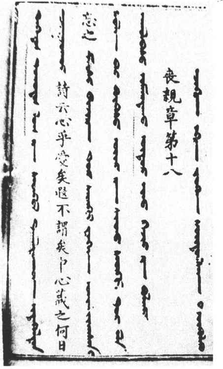
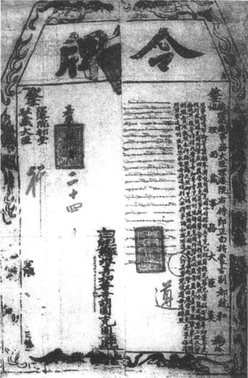

北方民族凭借武力征服统治汉地，但是在与汉族社会的广泛接触过程中，依然没有逃脱征服者反而被征服的命运，通过遣使、朝贡、互市、联姻等不同方式的经济文化交流，北方民族相继走向汉化，主体部分内迁之后逐步融入汉族。契丹虽是游牧民族，但长期活动在华北农业区的北缘，对汉族农业文明有着深入的接触和了解，并很早就开始发展农耕和纺织。辽开国之初，阿保机即在上京建孔子庙，春秋祭奠。辽圣宗喜欢读《贞观政要》和唐高祖、唐太宗、唐玄宗的事迹，经常询问臣下有关唐朝贞观、开元之政事，以汲取经验教训。辽后期皇帝道宗自谓“吾修文物，彬彬不异中华”［28］，他在清宁元年（1055）下诏设学养士，在各州相继建立孔子庙，并颁赐“五经”诸家注疏，命令博士、助教认真传授。此后还在中京设国子监，诏令有司颁行《史记》、《汉书》，翰林学士宣讲五经大义。辽亡于金，契丹人大多被金朝编入部族军，守卫北部边境或承担畜牧业劳动，部分契丹贵族则在金朝任职，并加入了女真贵族汉化的潮流。辽太祖长子耶律倍的八世孙、金尚书右丞耶律履之子耶律楚材，蒙元前期在汉廷怯薛掌管汉地文书，汉人称为中书令，实际是一个汉化相当彻底的契丹士大夫。他反复向蒙古统治者陈说儒家治国之道，并致力推行减少屠杀、依照中原传统确定赋税制度、通过考试选拔人才、设立机构编纂刊刻经史著作等旨在恢复汉地正常统治秩序的措施。契丹出身的耶律楚材为保护和延续中原农业文明作出了重要贡献，故后人称其“大有造于中国，功德塞天地”［29］。在元代的四个民族等级中，契丹人、女真人和北方汉族居民被视为一体，统称“汉人”，陶宗仪《南村辍耕录》中所列汉人八种就有契丹人。实际最迟至元末明初，契丹除少部分融入漠北蒙古族和东北女真族之外，基本都与汉族社会融合，契丹之名逐渐从历史的舞台上消失。
党项族是以党项羌为主体，吸收西北地区氐、羌、吐蕃等民族成分而形成的重要民族，其发展本身就经历了一个较长时段的民族融合过程。党项虽然以游牧为主要生活方式，但是与汉族地区的接触比较早，因此汉化的倾向非常明显。元昊亲自主持、野利仁荣等人创制的西夏文字，形体结构都是以汉字为依据，而且大量使用汉语借词。《论语》、《孟子》、《孝经》、《贞观政要》、《周书》、《孙子兵法》、《六韬》等大量的汉语文献被译成西夏文字，在西夏社会产生了广泛的影响。西夏仁宗因母后曹氏是汉人，自幼对汉族文化十分崇尚，在其统治西夏的五十四年中，始终坚持“崇儒”、“尚文”的施政方针。他广置学校，设立孔庙，并加封孔子为“文宣帝”以示尊崇。此外还开设科举，并允许宗室成员应试，西夏神宗早年即以科举出身，且为廷试第一。仁宗建有内学，挑选著名儒学家主持讲授。西夏自己的儒学家斡道冲就被任命为蕃、汉教授，他曾用西夏文翻译过《论语注》，名为《论语小义》，还用西夏文撰成《周易卜筮断》一书，流传于西夏各地。党项人在元朝的民族等级制度中，与畏兀儿等西北民族共同列为第二等级色目人，不同于契丹、女真列入汉人，因而民族文化风习保持相对持久。元朝统一全国之后，党项人作为重要的依靠力量被分遣到各地戍守，逐渐融入了当地汉族社会。河南濮阳的西夏遗民在家谱中记载：“时北方人初至，犹射猎为俗，后渐知耕垦、播殖如华人。”党项之名大致在元末明初也归入了历史。
女真建国前后，生产方式已经过渡到粗放的农耕阶段，因此虽然活动的区域远离汉地，但是接受汉文化的激进程度较契丹、党项则是有过之而无不及。第三任皇帝熙宗尚未迁都中原，即已“失女真之本态”，“宛然一汉家少年子也”。［30］迁都之后诸帝汉化愈深，文治更盛，号称“一代制作，能自树立唐、宋之间”［31］。金灭北宋之后，实际儒学逐渐在金代文化思想中占据统治地位。熙宗开始，诸帝都遵奉孔子，力崇儒学，宣讲儒学在金朝蔚成风气。学习儒学为主的学校日益兴盛，士人由科举而位列宰相者甚多，还涌现了霸州杜时升、易州麻九畴、真定王若虚、磁州赵秉文等理学名家。金朝以词赋取士，诗词成为文人普遍采用的文学体裁。金人诗词继承北宋，模仿苏（轼）黄（庭坚），金末元好问以其倾注饱经丧乱情感的诗词，独特的艺术造诣，成为当时北方文坛的魁首。女真人自金太宗至金末，内迁一直没有停止，特别是金宣宗因受蒙古人的压迫迁都汴京，内迁的女真人更多，约占人口总数的一半。他们与汉人错杂而居，互为婚姻，多习汉语，衣汉服，效仿汉族生活习惯，甚或弃武就文，趋尚文墨，民族特色逐渐丧失。金亡之后，中原女真人大多改用汉姓，如完颜改王，乌古论改商，纥石烈改高，术虎改董，蒲查改李，赤盏改张等，与汉族更少分别。元朝将女真人列入“汉人”这一等级，更在客观上消除了女真人与汉人的民族畛域，使之彻底融为一体。只有东北地区的女真人依然保持旧俗，成为后来满族的前身。
元朝是中国历史上第一个少数民族建立的统一王朝，而其民族关系也远比辽、西夏、金要复杂，全体百姓被分为蒙古、色目、汉人、南人四个等级，地位有高低贵贱之分。在大一统的局面之下，元人的活动范围空前扩大，民族之间的接触往来更加频繁。因为幅员辽阔，许多重点地区需要屯兵镇守，大批蒙古、色目军士离开故土，迁入中原诸地。他们与汉族杂居，［32］且互为婚姻，由于受到强势的汉族社会文化影响，逐渐汉化。许多人使用汉文字号乃至汉姓、汉名，有些人受汉族习俗影响，开始遵行守节、丁忧之制。（图1—15）《元史·列女传》即记载了若干蒙古、色目族妇女因守节拒绝改嫁而受到朝廷旌表的事例。经过长期的杂居交往，蒙古、色目人与汉人已达到相忘相化，不易识别的程度。明朝建立之初，朱元璋下诏禁止胡服、胡姓、胡语，留在中原的蒙古、色目遗民为避免歧视，多改为汉姓，此举无疑加速了新的民族同化。

图1-15 元刊蒙汉合璧《孝经》
但是，作为元朝的统治民族，我们应当看到，蒙古族内迁汉地的只是一小部分，民族的主体仍然居于漠北草原，并且没有因为元朝的灭亡而消失或同化于他族，而是长期作为草原的主人活跃在历史的舞台。由于坚持游牧、狩猎生活方式，漠北草原在国家政治生活中占有重要地位，且存在着一个强大而保守的草原游牧贵族集团。蒙古族与契丹、党项、女真相比较，汉化进程明显迟缓，而蒙古文化除汉文化之外，还受到吐蕃喇嘛教文化、中亚伊斯兰文化乃至欧洲基督教文化的影响，并逐渐形成了自己的传统。其实，元朝色目人在与汉族融合的过程中，也有例外的情况，那就是今天中华民族重要的成员回族。当年伴随着蒙古对中亚、西亚的征服，有大批信奉伊斯兰教的突厥、波斯、阿拉伯人移居到中国，汉人称之为回回人，他们被元朝政府列入色目人之中。回回人的种族、语言、籍贯并不相同，但入居中国后，在伊斯兰教强大的整合作用下，形成为新的文化共同体。他们散居在全国各地，长期与汉人相处，深受汉文化的影响，但又始终保持着自己原有的宗教信仰和风俗习惯，致力于兴教建寺活动。元朝灭亡后，内迁色目人基本融入汉族，只有回回人没有消失，最终发展成为今天的回族。
清代是中国历史上民族融合的关键时期之一，无论其影响的幅度还是深度，都达到了新的历史高峰。在疆域辽阔且统一巩固的多民族帝国里，以汉族为主体的民族融合和政治、经济、文化交流，得到了充分施展的舞台，其中满汉之间的民族融合占据了主角位置。早在清兵入关之前，清政权与明王朝之间已经有着经常的接触。努尔哈赤在建立八旗制度之初，就重视在汉族的文明宝库中寻找自己民族缺乏的文化要素，他设置专门的翻译机构，将《明会典》、《武经》、《洪武宝训》、《大学衍义》、《资治通鉴》和《通鉴纲目》等书翻译成满文，还翻译了《三国演义》、《西厢记》、《金瓶梅》等文学名著。清初的科举考试中，也设有专门的翻译科。汉文经典的大量翻译，势必影响文化相对落后的满人在政治、社会、人伦等方面的价值取向，潜移默化地改变处在“半游牧”状态的满族的文化心理。努尔哈赤、皇太极都经常引用汉文经典训诫诸王“世守孝悌之道”、“体恤士卒”。清兵入关之后，随着满人大批内迁，满汉之间的地域界限被打破，进而形成交错杂居的局面。尽管清初实行“崇尚满洲”的治国方略，强制推行圈地、投充、剃发等激化民族矛盾的政策，并在科举、任官甚至居住区域诸多方面，刻意地区分满汉，以求维护满族文化的地位。但是在汉族地区的统治趋于稳固之后，置身于汉文化汪洋大海之中的满洲贵族，逐渐迷失了自己，依然没有逃脱被汉化的命运。清代的康、雍、乾三帝自幼都接受过良好的汉化教育，就其个人文化素质而论，甚至超出了历史上绝大多数的汉族皇帝。康熙帝一生以好学著称，精通汉文经典名著，亲自撰写了多种解经著作。他崇尚程朱理学，重用汉人理学名臣，还亲自为太子讲授四书五经，务令精熟贯通。康熙又爱好自然科学，对农学、医学、气象都有浓厚的兴趣，还专门向欧洲传教士学习过几何学等西方科学知识。雍正帝在经史之外，通晓佛、道之学，还自撰论著阐述治国理念，对华夷之别、君臣职分等重大政治问题都进行过深入透彻的论述。乾隆帝擅长诗文书画，写作的汉文诗篇达五万余首，题字遍及天下，在历史、地理、考古等方面都有一定的造诣。在诸帝的示范之下，满洲贵族学习汉族文化蔚然成风，由于享有优渥的物质待遇，他们把大量的精力消磨在汉族传统士大夫热衷的诗书琴棋画等艺术门类。《八旗通志》记载有五百多种满族士人的经史子集著作，民国初年成书的《八旗画录》收录了从顺治至清末的满族画家二百九十余人，其间享有盛名者颇众。普通的满族百姓在与汉人的交错杂居中，也逐渐吸收和顺应汉民族的文化习俗，他们与汉族通婚，语言文字习用汉语，许多满人已不会说满语，最后连姓氏大部分也改用汉姓。可以说截止到清末，除了部分区域和家族，满汉民族已然融为一体。
在清代多民族一统的帝国平台之上，边疆地区各民族的融合也进入一个新的时期。清代初年，今天中国境内的55个少数民族已经基本形成，他们在边疆地区呈现大杂居、小聚居、普遍散居的状态。清朝定鼎北京之后，陆续平定了准噶尔部的分裂活动和回部大小和卓的叛乱，册封了西藏宗教领袖并派出驻藏大臣，（图1—16）加强对西部边疆地区的控制与管理。这些举措既加强了边疆与内地的联系，又有利于边疆各民族间的融合。清廷在对北部边疆的经营与管理方面，不但把散布在黑龙江、乌苏里江流域的赫哲、达斡尔、鄂伦春、鄂温克等族归拢到东北腹地，还经过多年征战，控制了蒙古高原及迤西地区，推行“盟旗制度”，以统治归附的蒙古各部。此间，汉族百姓因战乱、灾荒、饥馑等诸多原因，也大量流入北部边疆，与各族杂居。不同民族成分之间的辗转流动与交错杂居，在北方广阔的地区，掀起了以汉、满、蒙古的融合为核心，维吾尔、达斡尔、鄂温克、鄂伦春等族也纷纷卷入的民族融合高潮。经过清代的民族融合，汉、满、蒙、回、藏最后成为中国境内五大代表性的民族。

图1-16 驻藏大臣令牌
［1］ 《中国青铜时代》，三联书店，1983，第49—54页。
［2］ 李学勤主编《中国古代文明与国家形成研究》，云南人民出版社，1997。
［3］ 赫胥黎《类人猿的自然史》，《人在自然中的位置》，科学出版社，1971，第1页。
［4］ 徐旭生《中国古史的传说时代》，文物出版社，1985。
［5］ 岑仲勉《西周社会制度问题》，上海人民出版社，1957，第111页。
［6］ 苏秉琦《中国文明起源新探》，三联书店，1999。
［7］ 《孟子》卷五，滕文公章句上。
［8］ 参见张光直《从夏商周三代考古论三代关系与中国古代国家的形成》，载《中国青铜时代》，三联书店，1983。
［9］ 顾颉刚《战国秦汉间人的造伪与辨伪》，《汉代学术史略》附录，东方出版社，1996。
［10］ 陈寅恪《唐代政治史述论稿》上篇，上海古籍出版社，1982。
［11］ 司马光《资治通鉴》卷一九四，唐太宗贞观七年，中华书局，1982。
［12］ 司马光《资治通鉴》卷一九八，唐太宗贞观二十一年，中华书局，1982。
［13］ 司马光《资治通鉴》卷一九六，唐太宗贞观十七年，中华书局，1982。
［14］ 〔日〕圆仁《入唐求法巡礼行记》卷三，上海古籍出版社，1986。
［15］ 宋濂《元史·地理志》卷五九，中华书局，1976，第1400页。
［16］ 赵尔巽等《清史稿·地理志》卷五四，中华书局，1977，第1891页。
［17］ 宋子贞《中书令耶律公神道碑》，苏天爵编《元文类》卷五七，上海古籍出版社，1993。
［18］ 《清世祖实录》卷一二，中华书局，1985—1987。
［19］ 程钜夫《雪楼集》卷十《奏议·学校》，《文渊阁四库全书》本。
［20］ 彭大雅撰、徐霆疏证《黑鞑事略》，《丛书集成》初编本。
［21］ 脱脱等《辽史·百官志一》，中华书局，1974。
［22］ 据郭成康、林铁钧《清代文字狱》统计，群众出版社，1990。
［23］ 详见黄爱平《四库全书纂修研究》，中国人民大学出版社，1989。
［24］ 鲁迅《且介亭杂文·病后杂谈之余》，人民文学出版社，1952。
［25］ 《清世祖实录》卷一七，中华书局，1985—1987。
［26］ 王夫之《读通鉴论》卷一四，“哀帝”，中华书局，1975。
［27］ 王夫之《读通鉴论》卷二八，“五代”上，中华书局，1975。
［28］ 叶隆礼《契丹国志》卷九，“道宗天福皇帝”，上海古籍出版社，1985。
［29］ 沈德符《万历野获编》卷二八，“耶律楚材”条，中华书局，1997。
［30］ 徐梦莘《三朝北盟会编》卷一六六引《金虏节要》，上海古籍出版社，1987。
［31］ 脱脱《金史》卷一二五，列传第六十三，文艺上，中华书局，1975。
［32］ 元朝后期镇江路所辖一司三县，即住有非汉族的外来侨寓人口一百七十余户，其中包括蒙古29户，畏兀儿14户，回回59户，也里可温（指外来的基督徒）23户，河西（党项）3户，契丹21户，女真25户。《至顺镇江志》卷三《户口·侨寓》，江苏古籍出版社，1999，第90—91页。